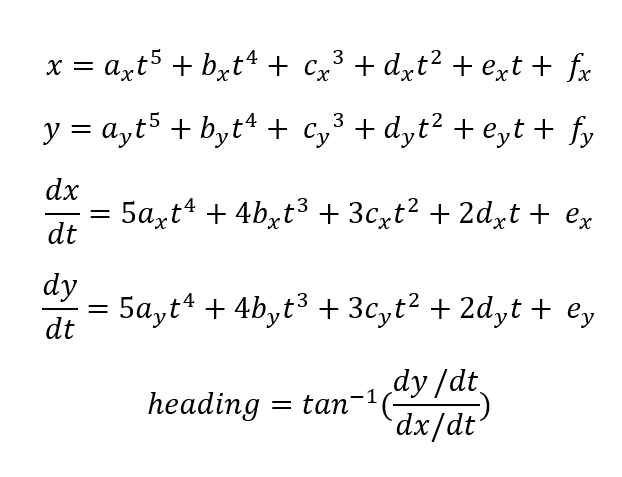

Splines
Give two points, p0 and p1, each with an X and Y coordiante and a heading, a path between these points can be
modeled using two polynomials. These equations are shown below, where at t = 0 you are at the first point. At
t = 1 you are at the second point, and between zero and one are the points between.

The values of ax, bx, cx, dx, ex, fx, ay, by, cy, dy, ey, and fy can be cacluated as follows.
- dist = p0.distance(p1)
- scale = 1.2 * dist
- x0 = p0.x
- x1 = p1.x
- dx0 = cos(p0.heading) * scale
- dx0 = cos(p1.heading) * scale
- ddx0 = 0.0
- ddx1 = 0.0
And the cooefficients of the spline are
- ax = -6 * v0_ - 3 * dv0_ - 0.5 * ddv0_ + 0.5 * ddv1_ - 3 * dv1_ + 6 * v1_;
- bx = 15 * v0_ + 8 * dv0_ + 1.5 * ddv0_ - ddv1_ + 7 * dv1_ - 15 * v1_;
- cx = -10 * v0_ - 6 * dv0_ - 1.5 * ddv0_ + 0.5 * ddv1_ - 4 * dv1_ + 10 * v1_;
- dx = 0.5 * ddv0_;
- ex = dv0_;
- fx = v0_;
And for the Y equation
- dist = p0.distance(p1)
- scale = 1.2 * dist
- y0 = p0.y
- y1 = p1.y
- dy0 = sin(p0.heading) * scale
- dy0 = sin(p1.heading) * scale
- ddy0 = 0.0
- ddy1 = 0.0
And the cooefficients of the spline are
- ay = -6 * v0_ - 3 * dv0_ - 0.5 * ddv0_ + 0.5 * ddv1_ - 3 * dv1_ + 6 * v1_;
- by = 15 * v0_ + 8 * dv0_ + 1.5 * ddv0_ - ddv1_ + 7 * dv1_ - 15 * v1_;
- cy = -10 * v0_ - 6 * dv0_ - 1.5 * ddv0_ + 0.5 * ddv1_ - 4 * dv1_ + 10 * v1_;
- dy = 0.5 * ddv0_;
- ey = dv0_;
- fy = v0_;
Getting Started